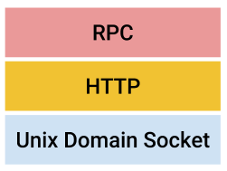

When it comes to inter-process communication (IPC) between processes on the same Linux host, there are multiple options: FIFOs, pipes, shared memory, sockets and so on. One of the most interesting options is Unix Domain Sockets that combine the convenient API of sockets with the higher performance of the other single-host methods.
This post demonstrates some basic examples of using Unix domain sockets with Go and explores some benchmarks comparing them to TCP loop-back sockets.
Unix domain sockets (UDS)
Unix domain sockets (UDS) have a long history, going back to the original BSD socket specification in the 1980s. The Wikipedia definition is:
A Unix domain socket or IPC socket (inter-process communication socket) is a data communications endpoint for exchanging data between processes executing on the same host operating system.
UDS support streams (TCP equivalent) and datagrams (UDP equivalent); this post focuses on the stream APIs.
IPC with UDS looks very similar to IPC with regular TCP sockets using the loop-back interface (localhost or 127.0.0.1), but there is a key difference: performance. While the TCP loop-back interface can skip some of the complexities of the full TCP/IP network stack, it retains many others (ACKs, TCP flow control, and so on). These complexities are designed for reliable cross-machine communication, but on a single host they're an unnecessary burden. This post will explore some of the performance advantages of UDS.
There are some additional differences. For example, since UDS use paths in the filesystem as their addresses, we can use directory and file permissions to control access to sockets, simplifying authentication. I won't list all the differences here; for more information feel free to check out the Wikipedia link and additional resources like Beej's UNIX IPC guide
The big disadvantage of UDS compared to TCP sockets is the single-host restriction, of course. For code written to use TCP sockets we only have to change the address from local to remote and everything keeps working. That said, the performance advantages of UDS are significant enough, and the API is similar enough to TCP sockets that it's quite possible to write code that supports both (UDS on a single host, TCP for remote IPC) with very little difficulty.
Using Unix domain sockets in Go
Let's start with a basic example of a server in Go that listens on a UNIX domain socket:
const SockAddr = "/tmp/echo.sock"
func echoServer(c net.Conn) {
log.Printf("Client connected [%s]", c.RemoteAddr().Network())
io.Copy(c, c)
c.Close()
}
func main() {
if err := os.RemoveAll(SockAddr); err != nil {
log.Fatal(err)
}
l, err := net.Listen("unix", SockAddr)
if err != nil {
log.Fatal("listen error:", err)
}
defer l.Close()
for {
// Accept new connections, dispatching them to echoServer
// in a goroutine.
conn, err := l.Accept()
if err != nil {
log.Fatal("accept error:", err)
}
go echoServer(conn)
}
}
UDS are identified with paths in the file system; for our server here we use /tmp/echo.sock. The server begins by removing this file if it exists, what is that about?
When servers shut down, the file representing the socket can remain in the file system unless the server did orderly cleanup after itself. If we re-run another server with the same socket path, we may get the error:
$ go run simple-echo-server.go
2019/02/08 05:41:33 listen error:listen unix /tmp/echo.sock: bind: address already in use
To prevent that, the server begins by removing the socket file, if it exists [1].
Now that the server is running, we can interact with it using Netcat, which can be asked to connect to UDS with the -U flag:
$ nc -U /tmp/echo.sock
Whatever you type in, the server will echo back. Press ^D to terminate the session. Alternatively, we can write a simple client in Go that connects to the server, sends it a message, waits for a response and exits. The full code for the client is here, but the important part is the connection:
c, err := net.Dial("unix", "/tmp/echo.sock")
We can see that writing UDS servers and clients is very similar to writing regular socket servers and clients. The only difference is having to pass "unix" as the network parameter of net.Listen and net.Dial; the rest of the code remains the same. Obviously, this makes it very easy to write generic server and client code that's independent of the actual kind of socket it's using.
HTTP and RPC protocols over UDS
Network protocols compose by design. High-level protocols, such as HTTP and various forms of RPC, don't particularly care about how the lower levels of the stack are implemented as long as certain guarantees are maintained.
Go's standard library comes with a small and useful rpc package that makes it trivial to throw together quick RPC servers and clients. Here's a simple server that has a single procedure defined:
const SockAddr = "/tmp/rpc.sock"
type Greeter struct {
}
func (g Greeter) Greet(name *string, reply *string) error {
*reply = "Hello, " + *name
return nil
}
func main() {
if err := os.RemoveAll(SockAddr); err != nil {
log.Fatal(err)
}
greeter := new(Greeter)
rpc.Register(greeter)
rpc.HandleHTTP()
l, e := net.Listen("unix", SockAddr)
if e != nil {
log.Fatal("listen error:", e)
}
fmt.Println("Serving...")
http.Serve(l, nil)
}
Note that we use the HTTP version of the server. It registers a HTTP handler with the http package, and the actual serving is done with the standard http.Serve. The network stack here looks something like this:
An RPC client that can connect to the server shown above is available here. It uses the standard rpc.Client.Call method to connect to the server.
Benchmarking UDS compared to loop-back TCP sockets
Note: benchmarking is hard, so please take these results with a grain of salt. There's some more information on benchmarking different socket types on the Redis benchmarks page and in this paper, as well as many other resources online. I also found this set of benchmarks (written in C) instructive.
I'm running two kinds of benchmarks: one for latency, and one for throughput.
For latency, the full code of the benchmark is here. Run it with -help to see what the flags are, and the code should be very straightforward to grok. The idea is to ping-pong a small packet of data (128 bytes by default) between a server and a client. The client measures how long it takes to send one such message and receive one back, and takes that combined time as "twice the latency", averaging it over many messages.
On my machine, I see average latency of ~3.6 microseconds for TCP loop-back sockets, and ~2.3 microseconds for UDS.
The throughput/bandwidth benchmark is conceptually simpler than the latency benchmark. The server listens on a socket and grabs all the data it can get (and discards it). The client sends large packets (hundreds of KB or more) and measures how long each packet takes to send; the send is done synchronously and the client expects the whole message to be sent in a single call, so it's a good approximation of bandwidth if the packet size is large enough.
Obviously, the throughput measurement is more representative with larger messages. I tried increasing them until the throughput improvements tapered off.
For smaller packet sizes, I see UDS winning over TCP: 10 GB/sec compared to 9.4 GB/sec for 512K. For much larger packet sizes 16-32 MB, the difference becomes negligible (both taper off at about 13 GB/sec). Interestingly, for some packet sizes (like 64K), TCP sockets are winning on my machine.
For very small message sizes we're getting back to latency-dominated performance, so UDS is considerably faster (more than 2x the number of packets per second compared to TCP). In most cases I'd say that the latency measurements are more important - they're more applicable to things like RPC servers and databases. In some cases like streaming video or other "big data" over sockets, you may want to pick the packet sizes carefully to optimize the performance for the specific machine you're using.
This discussion has some really insightful information about why we should expect UDS to be faster. However, beware - it's from 2005 and much in Linux has changed since then.
Unix domain sockets in the real-world Go projects
I was curious to see if UDS are actually used in real-world Go projects. They sure are! A few minutes of browsing/searching GitHub quickly uncovered UDS servers in many components of the new Go-dominated cloud infrastructure: runc, moby (Docker), k8s, lstio - pretty much every project I looked at.
That makes sense - as the benchmarks demonstrate, there are significant performance advantages to using a UDS when the client and server are both on the same host. And the API of UDS and TCP sockets is so similar that the cost of supporting both interchangeably is quite small.
| [1] | For internet-domain socket, the same issue exists with ports that are marked taken by processes that die without cleanup. The SO_REUSEADDR socket option exists to address this problem. |